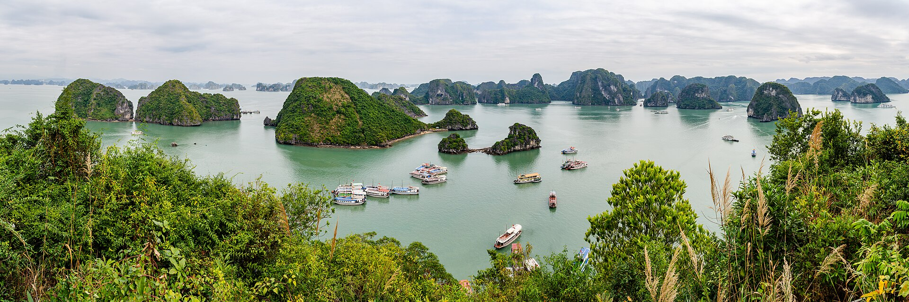

Day 03 · TUE
落船，然後向北
Vịnh Hạ Long → Sa Pa

全日最長嘅一段。冇直達車：沙壩喺西北、下龍灣喺東北，河內啱啱喺中間，任何陸路都一定經過河內。
- 移動
- 9 小時
- 轉車
- 河內 1 小時
- 住宿
- 沙壩鎮
- 06:15甲板太極、睇日出
- 07:00早餐、最後一個景點浮村或者 Pearl Farm。
- 09:00落船慢十分鐘就響警報。
- 09:15專車返河內2.5–3 小時，12:00–12:30 到老城區。
- 13:30Limousine 直奔沙壩Sapa Express、HK Buslines、Green Lion，5.5 小時。
- 19:00到沙壩食飯、行夜市、早啲瞓。
13:30 係底線遲過呢班，下一班係 22:00 臥鋪，又變返凌晨四點到。
包車直踩下龍灣 → 沙壩私家車約 HK$1,300–1,800／車，唔會快，但唔使趕 13:30，行李多或者人多就值。